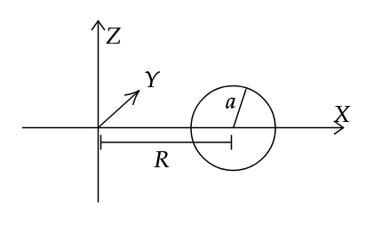

We shall consider a circle, whose centre is placed at a distance \(R\) from the origin on the X axis, and radius a, and we shall revolve this about the Z axis to form a torus. Hence, we can find its moment of inertia. We shall also make use of the fact that integration, i.e. area under a curve, for an odd function from \(-a\) to \(a\) is always 0, regardless of the function. This is obvious, but if you want, imagine an odd function, say \(f(x) = x\), or \(f(x) = \sin x\), and integrate, i.e. find its area, from \(-a\) to \(a\).

From figure, equation on circle:
\[(x-R)^2 + z^2 = a^2 \]
\[\implies z = \sqrt{a^2 - (x-R)^2}\tag1\]
We shall first find the volume of a torus, since it is necessary to find the moment of inertia.
\[V = \int_{body} dV\]
\[= \int_{R-a}^{R+a} \int_{0}^{2\pi} \int_{-z}^{z} x dx d \theta dz\]
Where, \(z\) is given by eqn. (1)
\[\implies V = 2(2 \pi) \int_{R-a}^{R+a} x \sqrt{a^2 - (x-R)^2} \; dx\]
Let \(u = x-R\) \(\implies x = u+R\) and \(du = dx\).
As \(x\) varies from \(R-a\) to \(R+a\), \(u\) varies from \(-a\) to \(a\).
\[V = 4\pi \int_{-a}^a (u+R) \sqrt{a^2 - u^2} \; du\]
\[= 4 \pi \left[ \int_{-a}^a u \sqrt{a^2 - u^2} du + R \int _{-a}^a \sqrt{a^2 - u^2} du \right]\]
Since, the first term in the bracket is an odd function, the entire term goes to zero. The second term is nothing but the area under a semicircle of radius \(a\) (centred at origin).
\[\implies V = 2\pi^2 a^2 R\tag2\]
Now, to find \(I_{zz'}\)
\[I_{zz'} = \int_{body} r^2 dm\]
\[= 2 \int_{R-a}^{R+a} \int_{0}^{2\pi} \int_{0}^{z} x^3 {m \over 2 \pi^2 a^2 R} dx d \theta dz\]
Where, \(z\) is again given by eqn (1).
By following the same substitution steps, we get,
\[I_{zz'} = {2m \over \pi a^2 R} \int_{-a}^a (u+R)^3 \sqrt{a^2 - u^2} du\]
Using binomial theorem,
\[= {2m \over \pi a^2 R} \left[ \int_{-a}^a u^3 \sqrt{a^2 - u^2} du + 3R\int_{-a}^a u^2 \sqrt{a^2 - u^2} du + 3R^2\int_{-a}^a u \sqrt{a^2 - u^2} du + \int_{-a}^a R^3 \sqrt{a^2 - u^2} du \right]\]
Here again, the first and third terms vanish. After integrating, we get,
\[= {2m \over \pi a^2 R} \left[ 3R \left({\pi \over 8} a^4 \right) + R^3 \left( {\pi a^2 \over 2} \right) \right] \]
\[\therefore I_{zz'} = m\left( {3a^2\over 4} + R^2 \right)\]
Here, we note that this formula works in the boundary condition of when \(a = 0\), it becomes a ring, whose moment of inertia is \(mR^2\). However, for some reason, if \(R = 0\), we get a sphere, but the moment of inertia of a sphere is \({2\over5} mR^2\), which we do not get according to this forumla.